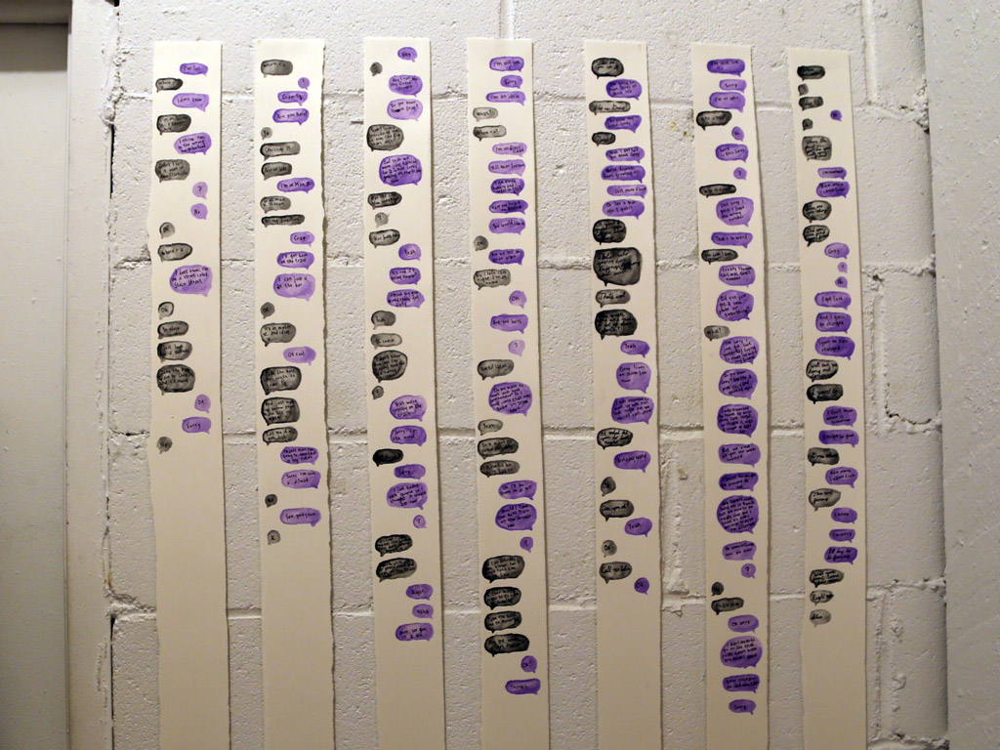
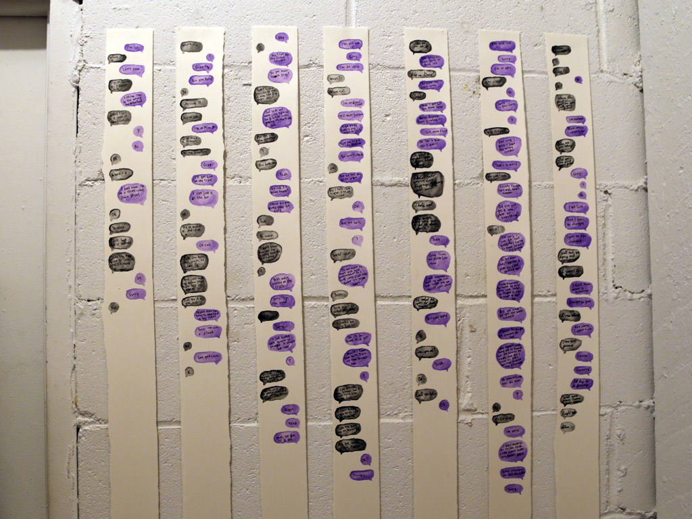

Something Ave. is an art app originally published for iOS and Android. Something Ave. was available between 2014 - 2018 and was recently removed. While updated submissions are pending the app is available as a website here: something.owen.cool.
You can also play Something Ave. on my itch.io page.
The app tells the story through a hand drawn mobile phone interface. It originated as a pretty simple joke I thought of while walking around Long Island City in the summer of 2013 but developed into a big project that ended up taking about a year to complete.
There was a release party at the Gitana Rosa Gallery in January 2015, for which I also created the installation The Dead Shall Be Raised.
I began working on Something Ave. under the title Lostly at the CAC residency in Troy, New York.
The story is about the former owner of the phone, Blue, whose information the viewer is voyeuristically exploring. Versions of the conventional smart phone apps, like Messages, Phone, Maps, Notes, Camera, Photos and Calendar, are rendered in watercolors and pen and ink drawings, reflecting their representations not of reality, but of Blue’s perspective on the world, which is deteriorating as he finds it difficult to connect with a past friend despite the immediacy of their communication through the device.


At the opening at Gitana Rosa I exhibited some of the original drawings that I made to create the app (and some that got censored by Apple):

 

The opening also featured the installation The Dead Shall Be Raised, which is based on the app.